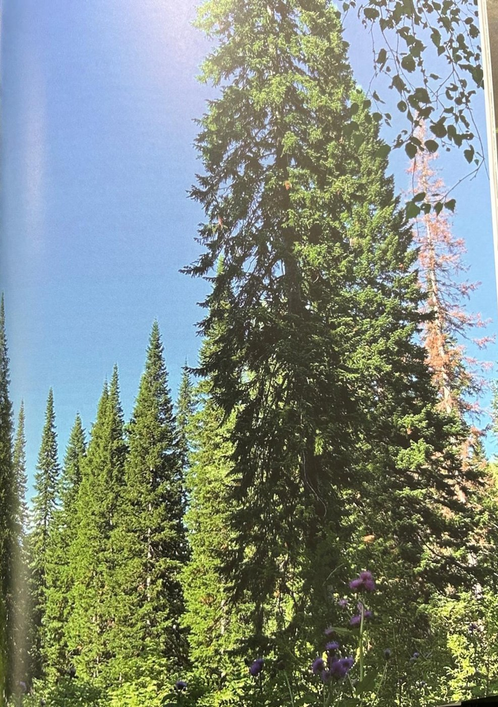
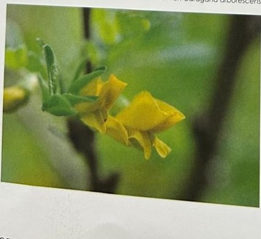

Groepen › Oude Wereld
35. Zuid-Siberië, Altaï-Sayangebergte

In het grensgebied van Kazachstan, Rusland en Mongolië, tussen de Siberische taiga en de Mongoolse steppen liggen de bergketens van Altai en Sayan. De bossen zijn er ook van het boreale type en bestaan uit naaldhoutsoorten, waarvan de namen niet moeilijk te onthouden zijn : Siberische spar, Siberische zilverspar, Siberische den, West-Siberische lork. De dennen en lorken zijn veeleer te vinden in de hogere zones, met een onderetage van Dwergberk en rododendrons. In lagergelegen zones komen ook loofhoutsoorten voor als Ratelpopulier en de zeldzamere Siberische balsempopulier, naast Zachte berk. In arboretumgroep 34 vallen vooral de overblijvende Siberische sparren op, ook al staan ze schraal. Een jongere aanplant van Siberische zilverspar is grotendeels mislukt. Een groepje Aziatische berken speelt hier pionier.
Uit het boek
0,28 ha · 15 soorten · 76 bomen · weerstation Altay
- Taiga van het Altai-Sayangebergte, gedomineerd door de Siberische spar. Vanaf de Paardendelle lijken de sparren nog hoger.
- Een twintigtal Aziatische witte berken, erwtenstruik en een Mongoolse eik.


Bron: Geografisch Arboretum Tervuren. Een wereldreis rond bomen (2020), p. 252 en volgende.
Deelgroepen
- 35 – Altaï-Sajan gebergte tussen Siberië en Mongolië
Soorten in deze groep (15)
- Picea obovataSiberische spar · 23 bomen
- Betula platyphyllaAziatische witte berk · 15 bomen
- Caragana arborescensErwtenstruik · 11 bomen
- Sorbus ariaMeelbes · 6 bomen
- Rhododendron species5 bomen
- Sorbus aucuparia subsp. sibirica5 bomen
- Abies sibirica2 bomen
- Betula pendulaRuwe berk · 2 bomen
- Betula speciesberk · 1 boom
- Cornus alba1 boom
- Lonicera tatarica1 boom
- Mespilus germanicaMispel · 1 boom
- Pinus cembraAlpenden · 1 boom
- Pinus sylvestrisGrove den · 1 boom
- Quercus mongolicaMongoolse eik · 1 boom
Tekst en foto: arboretum-tervuren.be (Koninklijke Schenking), met toestemming gebruikt.